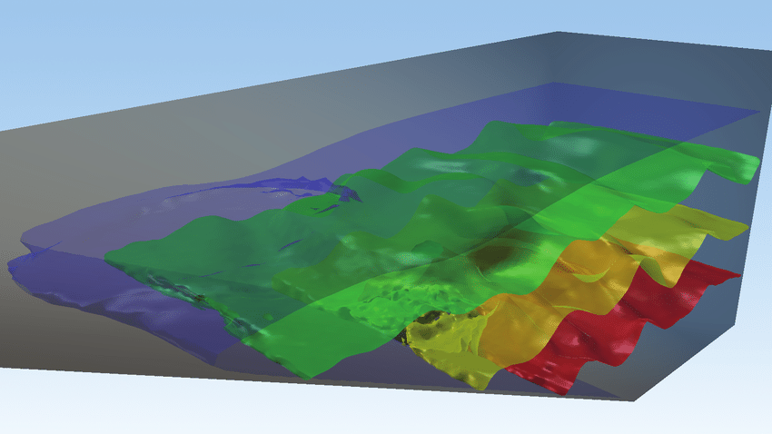
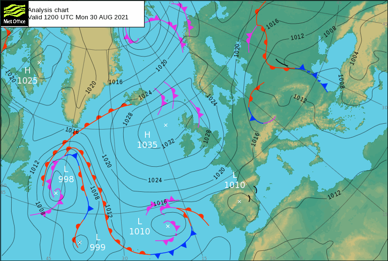

3.2. Mathematical background¶
In this section:
What are isosurfaces and isolines, and what is their relationship to the gradient?
3.2.1. What is a field?¶
A field is a map of a physical quantity at each point in space and time. You are probably already familiar with graphical representations of fields, via the example of weather maps showing temperature, pressure and wind velocity :
Physical quantity |
Example notation |
Type of field |
|---|---|---|
Temperature |
\(T(x,y,z,t)\) |
Scalar (magnitude only) |
Pressure |
\(p(x,y,z,t)\) |
Scalar (magnitude only) |
Wind velocity |
\(\underline{v}(x,y,z,t)\) |
Vector (magnitude and direction) |
A scalar field can be represented using a surface plot, contour plot, or a colour/grayscale map. On weather maps the pressure is normally represented using contours (called pressure isobars) and the temperature is normally represented using a colour map. The example below shows a grayscale map of the scalar field defined by
import matplotlib.pyplot as plt
import numpy as np
import matplotlib.cm as cm
x = np.linspace(-3., 3., 256) #x coordinates arranged on [-3,3]
y = np.linspace(-3., 3., 256) #y coordinates arranged on [-3,3]
X, Y = np.meshgrid(x, y) #make the plot grid
Z = X * np.sinc(X ** 2 + Y ** 2) #define the scalar field values at each point
# options to prettify the plot
fig,ax=plt.subplots(figsize=(5,5))
ax.set_title('A scalar field')
ax.axis([-3,3,-3,3])
ax.xaxis.set_ticks([]), ax.yaxis.set_ticks([])
# The "pcolormesh" function can be used to make a density plot.
ax.pcolormesh(X,Y,Z,shading='auto',cmap=cm.gray)
plt.show()
C:\Users\Ali\anaconda3\lib\site-packages\numpy\core\getlimits.py:172: RuntimeWarning: divide by zero encountered in exp2
eps=exp2(ld(-112)),
C:\Users\Ali\anaconda3\lib\site-packages\numpy\core\getlimits.py:51: RuntimeWarning: divide by zero encountered in log10
self.precision = int(-log10(self.eps))
C:\Users\Ali\anaconda3\lib\site-packages\numpy\core\getlimits.py:52: RuntimeWarning: divide by zero encountered in power
self.resolution = float_to_float(float_conv(10) ** (-self.precision))
C:\Users\Ali\anaconda3\lib\site-packages\numpy\core\getlimits.py:184: RuntimeWarning: divide by zero encountered in exp2
epsneg_f80 = exp2(ld(-64))
C:\Users\Ali\anaconda3\lib\site-packages\numpy\core\getlimits.py:185: RuntimeWarning: divide by zero encountered in exp2
tiny_f80 = exp2(ld(-16382))
C:\Users\Ali\anaconda3\lib\site-packages\numpy\core\getlimits.py:199: RuntimeWarning: divide by zero encountered in exp2
eps=exp2(ld(-63)),
C:\Users\Ali\anaconda3\lib\site-packages\numpy\core\getlimits.py:212: RuntimeWarning: divide by zero encountered in nextafter
if hasattr(umath, 'nextafter') # Missing on some platforms?
C:\Users\Ali\anaconda3\lib\site-packages\numpy\core\getlimits.py:224: RuntimeWarning: divide by zero encountered in exp2
eps=exp2(ld(-105)),
C:\Users\Ali\anaconda3\lib\site-packages\numpy\core\getlimits.py:225: RuntimeWarning: divide by zero encountered in exp2
epsneg= exp2(ld(-106)),
C:\Users\Ali\anaconda3\lib\site-packages\numpy\core\getlimits.py:227: RuntimeWarning: divide by zero encountered in exp2
tiny=exp2(ld(-1022)))
C:\Users\Ali\anaconda3\lib\site-packages\numpy\__init__.py:343: RuntimeWarning: divide by zero encountered in subtract
if not abs(x.dot(x) - 2.0) < 1e-5:
C:\Users\Ali\anaconda3\lib\site-packages\numpy\__init__.py:343: RuntimeWarning: divide by zero encountered in absolute
if not abs(x.dot(x) - 2.0) < 1e-5:
C:\Users\Ali\anaconda3\lib\site-packages\numpy\core\function_base.py:127: RuntimeWarning: divide by zero encountered in multiply
start = asanyarray(start) * 1.0
C:\Users\Ali\anaconda3\lib\site-packages\numpy\core\function_base.py:128: RuntimeWarning: divide by zero encountered in multiply
stop = asanyarray(stop) * 1.0
C:\Users\Ali\anaconda3\lib\site-packages\numpy\core\function_base.py:134: RuntimeWarning: divide by zero encountered in double_scalars
delta = stop - start
C:\Users\Ali\anaconda3\lib\site-packages\numpy\core\function_base.py:141: RuntimeWarning: divide by zero encountered in double_scalars
step = delta / div
C:\Users\Ali\anaconda3\lib\site-packages\numpy\core\_methods.py:56: RuntimeWarning: divide by zero encountered in reduce
return umr_any(a, axis, dtype, out, keepdims)
C:\Users\Ali\anaconda3\lib\site-packages\numpy\core\function_base.py:151: RuntimeWarning: divide by zero encountered in multiply
y *= step
C:\Users\Ali\anaconda3\lib\site-packages\numpy\core\function_base.py:161: RuntimeWarning: divide by zero encountered in add
y += start
C:\Users\Ali\anaconda3\lib\site-packages\matplotlib\colors.py:850: RuntimeWarning: divide by zero encountered in double_scalars
[(1.0 - x, y1, y0) for x, y0, y1 in reversed(data)])
C:\Users\Ali\anaconda3\lib\site-packages\matplotlib\tri\triinterpolate.py:669: RuntimeWarning: divide by zero encountered in true_divide
gauss_w = np.ones([9], dtype=np.float64) / 9.
C:\Users\Ali\anaconda3\lib\site-packages\numpy\core\function_base.py:127: RuntimeWarning: divide by zero encountered in multiply
start = asanyarray(start) * 1.0
C:\Users\Ali\anaconda3\lib\site-packages\numpy\core\function_base.py:128: RuntimeWarning: divide by zero encountered in multiply
stop = asanyarray(stop) * 1.0
C:\Users\Ali\anaconda3\lib\site-packages\numpy\core\function_base.py:134: RuntimeWarning: divide by zero encountered in double_scalars
delta = stop - start
C:\Users\Ali\anaconda3\lib\site-packages\numpy\core\function_base.py:141: RuntimeWarning: divide by zero encountered in double_scalars
step = delta / div
C:\Users\Ali\anaconda3\lib\site-packages\numpy\core\_methods.py:56: RuntimeWarning: divide by zero encountered in reduce
return umr_any(a, axis, dtype, out, keepdims)
C:\Users\Ali\anaconda3\lib\site-packages\numpy\core\function_base.py:151: RuntimeWarning: divide by zero encountered in multiply
y *= step
C:\Users\Ali\anaconda3\lib\site-packages\numpy\core\function_base.py:161: RuntimeWarning: divide by zero encountered in add
y += start
C:\Users\Ali\anaconda3\lib\site-packages\ipykernel_launcher.py:9: RuntimeWarning: divide by zero encountered in square
if __name__ == '__main__':
C:\Users\Ali\anaconda3\lib\site-packages\ipykernel_launcher.py:9: RuntimeWarning: divide by zero encountered in add
if __name__ == '__main__':
C:\Users\Ali\anaconda3\lib\site-packages\numpy\lib\function_base.py:3427: RuntimeWarning: divide by zero encountered in equal
y = pi * where(x == 0, 1.0e-20, x)
C:\Users\Ali\anaconda3\lib\site-packages\numpy\lib\function_base.py:3427: RuntimeWarning: divide by zero encountered in multiply
y = pi * where(x == 0, 1.0e-20, x)
C:\Users\Ali\anaconda3\lib\site-packages\numpy\lib\function_base.py:3428: RuntimeWarning: divide by zero encountered in sin
return sin(y)/y
C:\Users\Ali\anaconda3\lib\site-packages\numpy\lib\function_base.py:3428: RuntimeWarning: divide by zero encountered in true_divide
return sin(y)/y
C:\Users\Ali\anaconda3\lib\site-packages\ipykernel_launcher.py:9: RuntimeWarning: divide by zero encountered in multiply
if __name__ == '__main__':
C:\Users\Ali\anaconda3\lib\site-packages\matplotlib\figure.py:321: RuntimeWarning: divide by zero encountered in isfinite
if not np.isfinite(figsize).all() or (np.array(figsize) < 0).any():
C:\Users\Ali\anaconda3\lib\site-packages\numpy\core\_methods.py:62: RuntimeWarning: divide by zero encountered in reduce
return umr_all(a, axis, dtype, out, keepdims)
C:\Users\Ali\anaconda3\lib\site-packages\matplotlib\figure.py:321: RuntimeWarning: divide by zero encountered in less
if not np.isfinite(figsize).all() or (np.array(figsize) < 0).any():
C:\Users\Ali\anaconda3\lib\site-packages\matplotlib\transforms.py:1996: RuntimeWarning: divide by zero encountered in double_scalars
self._mtx[0, 0] *= sx
C:\Users\Ali\anaconda3\lib\site-packages\matplotlib\transforms.py:1997: RuntimeWarning: divide by zero encountered in double_scalars
self._mtx[0, 1] *= sx
C:\Users\Ali\anaconda3\lib\site-packages\matplotlib\transforms.py:1998: RuntimeWarning: divide by zero encountered in double_scalars
self._mtx[0, 2] *= sx
C:\Users\Ali\anaconda3\lib\site-packages\matplotlib\transforms.py:1999: RuntimeWarning: divide by zero encountered in double_scalars
self._mtx[1, 0] *= sy
C:\Users\Ali\anaconda3\lib\site-packages\matplotlib\transforms.py:2000: RuntimeWarning: divide by zero encountered in double_scalars
self._mtx[1, 1] *= sy
C:\Users\Ali\anaconda3\lib\site-packages\matplotlib\transforms.py:2001: RuntimeWarning: divide by zero encountered in double_scalars
self._mtx[1, 2] *= sy
C:\Users\Ali\anaconda3\lib\site-packages\matplotlib\gridspec.py:203: RuntimeWarning: divide by zero encountered in subtract
fig_tops, fig_bottoms = (top - cell_hs).reshape((-1, 2)).T
C:\Users\Ali\anaconda3\lib\site-packages\matplotlib\gridspec.py:204: RuntimeWarning: divide by zero encountered in add
fig_lefts, fig_rights = (left + cell_ws).reshape((-1, 2)).T
C:\Users\Ali\anaconda3\lib\site-packages\numpy\core\_methods.py:43: RuntimeWarning: divide by zero encountered in reduce
return umr_minimum(a, axis, None, out, keepdims, initial, where)
C:\Users\Ali\anaconda3\lib\site-packages\numpy\core\_methods.py:39: RuntimeWarning: divide by zero encountered in reduce
return umr_maximum(a, axis, None, out, keepdims, initial, where)
C:\Users\Ali\anaconda3\lib\site-packages\matplotlib\transforms.py:361: RuntimeWarning: divide by zero encountered in double_scalars
return points[1, 0] - points[0, 0]
C:\Users\Ali\anaconda3\lib\site-packages\matplotlib\transforms.py:367: RuntimeWarning: divide by zero encountered in double_scalars
return points[1, 1] - points[0, 1]
C:\Users\Ali\anaconda3\lib\site-packages\numpy\lib\function_base.py:1281: RuntimeWarning: divide by zero encountered in subtract
a = op(a[slice1], a[slice2])
C:\Users\Ali\anaconda3\lib\site-packages\matplotlib\ticker.py:2165: RuntimeWarning: divide by zero encountered in less_equal
if np.any(np.diff(steps) <= 0) or steps[-1] > 10 or steps[0] < 1:
C:\Users\Ali\anaconda3\lib\site-packages\numpy\core\fromnumeric.py:87: RuntimeWarning: divide by zero encountered in reduce
return ufunc.reduce(obj, axis, dtype, out, **passkwargs)
C:\Users\Ali\anaconda3\lib\site-packages\matplotlib\ticker.py:2179: RuntimeWarning: divide by zero encountered in multiply
flights = (0.1 * steps[:-1], steps, 10 * steps[1])
C:\Users\Ali\anaconda3\lib\site-packages\matplotlib\ticker.py:2179: RuntimeWarning: divide by zero encountered in double_scalars
flights = (0.1 * steps[:-1], steps, 10 * steps[1])
C:\Users\Ali\anaconda3\lib\site-packages\matplotlib\axes\_base.py:3210: RuntimeWarning: divide by zero encountered in isfinite
and not np.isfinite(converted_limit)):
C:\Users\Ali\anaconda3\lib\site-packages\matplotlib\transforms.py:2792: RuntimeWarning: divide by zero encountered in isfinite
if (not np.isfinite(vmin)) or (not np.isfinite(vmax)):
C:\Users\Ali\anaconda3\lib\site-packages\matplotlib\transforms.py:2805: RuntimeWarning: divide by zero encountered in double_scalars
if maxabsvalue < (1e6 / tiny) * np.finfo(float).tiny:
C:\Users\Ali\anaconda3\lib\site-packages\matplotlib\transforms.py:1977: RuntimeWarning: divide by zero encountered in double_scalars
self._mtx[0, 2] += tx
C:\Users\Ali\anaconda3\lib\site-packages\matplotlib\transforms.py:1978: RuntimeWarning: divide by zero encountered in double_scalars
self._mtx[1, 2] += ty
C:\Users\Ali\anaconda3\lib\site-packages\numpy\ma\core.py:2365: RuntimeWarning: divide by zero encountered in isfinite
condition = ~(np.isfinite(a))
C:\Users\Ali\anaconda3\lib\site-packages\numpy\ma\core.py:2365: RuntimeWarning: divide by zero encountered in invert
condition = ~(np.isfinite(a))
C:\Users\Ali\anaconda3\lib\site-packages\matplotlib\axes\_axes.py:5635: RuntimeWarning: divide by zero encountered in true_divide
dX = np.diff(X, axis=1)/2.
C:\Users\Ali\anaconda3\lib\site-packages\matplotlib\axes\_axes.py:5636: RuntimeWarning: divide by zero encountered in greater_equal
if not (np.all(dX >= 0) or np.all(dX <= 0)):
C:\Users\Ali\anaconda3\lib\site-packages\matplotlib\axes\_axes.py:5644: RuntimeWarning: divide by zero encountered in subtract
X = np.hstack((X[:, [0]] - dX[:, [0]],
C:\Users\Ali\anaconda3\lib\site-packages\matplotlib\axes\_axes.py:5645: RuntimeWarning: divide by zero encountered in add
X[:, :-1] + dX,
C:\Users\Ali\anaconda3\lib\site-packages\matplotlib\axes\_axes.py:5646: RuntimeWarning: divide by zero encountered in add
X[:, [-1]] + dX[:, [-1]]))
C:\Users\Ali\anaconda3\lib\site-packages\matplotlib\lines.py:70: RuntimeWarning: divide by zero encountered in double_scalars
scaled_offset = offset * lw
C:\Users\Ali\anaconda3\lib\site-packages\matplotlib\axes\_base.py:2142: RuntimeWarning: divide by zero encountered in isfinite
if not np.any(np.isfinite(xys)):
C:\Users\Ali\anaconda3\lib\site-packages\ipykernel\pylab\backend_inline.py:195: RuntimeWarning: divide by zero encountered in greater
return rgbaArr[:,:3].dot((.299, .587, .114)) > .5
C:\Users\Ali\anaconda3\lib\site-packages\matplotlib\transforms.py:373: RuntimeWarning: divide by zero encountered in subtract
return points[1] - points[0]
C:\Users\Ali\anaconda3\lib\site-packages\matplotlib\transforms.py:813: RuntimeWarning: divide by zero encountered in double_scalars
return Bbox.from_extents(x0, y0, x0 + width, y0 + height)
C:\Users\Ali\anaconda3\lib\site-packages\matplotlib\transforms.py:993: RuntimeWarning: divide by zero encountered in not_equal
if np.any(self._points != other.get_points()):
C:\Users\Ali\anaconda3\lib\site-packages\matplotlib\transforms.py:379: RuntimeWarning: divide by zero encountered in double_scalars
return (x0, y0, x1 - x0, y1 - y0)
C:\Users\Ali\anaconda3\lib\site-packages\matplotlib\text.py:360: RuntimeWarning: divide by zero encountered in double_scalars
width = xmax - xmin
C:\Users\Ali\anaconda3\lib\site-packages\matplotlib\text.py:361: RuntimeWarning: divide by zero encountered in double_scalars
height = ymax - ymin
C:\Users\Ali\anaconda3\lib\site-packages\matplotlib\text.py:373: RuntimeWarning: divide by zero encountered in double_scalars
offsetx = (xmin + xmax) / 2
C:\Users\Ali\anaconda3\lib\site-packages\matplotlib\text.py:384: RuntimeWarning: divide by zero encountered in double_scalars
offsety = ymin + descent
C:\Users\Ali\anaconda3\lib\site-packages\matplotlib\text.py:413: RuntimeWarning: divide by zero encountered in double_scalars
xmin -= offsetx
C:\Users\Ali\anaconda3\lib\site-packages\matplotlib\text.py:414: RuntimeWarning: divide by zero encountered in double_scalars
ymin -= offsety
C:\Users\Ali\anaconda3\lib\site-packages\matplotlib\text.py:419: RuntimeWarning: divide by zero encountered in subtract
xys = M.transform(offset_layout) - (offsetx, offsety)
C:\Users\Ali\anaconda3\lib\site-packages\matplotlib\transforms.py:635: RuntimeWarning: divide by zero encountered in add
return Bbox(self._points + (tx, ty))
C:\Users\Ali\anaconda3\lib\site-packages\matplotlib\colors.py:1061: RuntimeWarning: divide by zero encountered in subtract
resdat -= vmin
C:\Users\Ali\anaconda3\lib\site-packages\matplotlib\colors.py:1062: RuntimeWarning: divide by zero encountered in double_scalars
resdat /= (vmax - vmin)
C:\Users\Ali\anaconda3\lib\site-packages\matplotlib\colors.py:1062: RuntimeWarning: divide by zero encountered in true_divide
resdat /= (vmax - vmin)
C:\Users\Ali\anaconda3\lib\site-packages\matplotlib\colors.py:469: RuntimeWarning: divide by zero encountered in less
if (np.diff(x) < 0).any():
C:\Users\Ali\anaconda3\lib\site-packages\matplotlib\colors.py:476: RuntimeWarning: divide by zero encountered in multiply
x = x * (N - 1)
C:\Users\Ali\anaconda3\lib\site-packages\matplotlib\colors.py:477: RuntimeWarning: divide by zero encountered in positive
xind = (N - 1) * np.linspace(0, 1, N) ** gamma
C:\Users\Ali\anaconda3\lib\site-packages\matplotlib\colors.py:477: RuntimeWarning: divide by zero encountered in multiply
xind = (N - 1) * np.linspace(0, 1, N) ** gamma
C:\Users\Ali\anaconda3\lib\site-packages\matplotlib\colors.py:480: RuntimeWarning: divide by zero encountered in subtract
distance = (xind[1:-1] - x[ind - 1]) / (x[ind] - x[ind - 1])
C:\Users\Ali\anaconda3\lib\site-packages\matplotlib\colors.py:480: RuntimeWarning: divide by zero encountered in true_divide
distance = (xind[1:-1] - x[ind - 1]) / (x[ind] - x[ind - 1])
C:\Users\Ali\anaconda3\lib\site-packages\matplotlib\colors.py:483: RuntimeWarning: divide by zero encountered in subtract
distance * (y0[ind] - y1[ind - 1]) + y1[ind - 1],
C:\Users\Ali\anaconda3\lib\site-packages\matplotlib\colors.py:483: RuntimeWarning: divide by zero encountered in multiply
distance * (y0[ind] - y1[ind - 1]) + y1[ind - 1],
C:\Users\Ali\anaconda3\lib\site-packages\matplotlib\colors.py:483: RuntimeWarning: divide by zero encountered in add
distance * (y0[ind] - y1[ind - 1]) + y1[ind - 1],
C:\Users\Ali\anaconda3\lib\site-packages\numpy\core\_methods.py:96: RuntimeWarning: divide by zero encountered in isnan
return um.isnan(a)
C:\Users\Ali\anaconda3\lib\site-packages\numpy\core\_methods.py:112: RuntimeWarning: divide by zero encountered in clip
return ufunc(*args, out=out, **kwargs)
C:\Users\Ali\anaconda3\lib\site-packages\matplotlib\colors.py:570: RuntimeWarning: divide by zero encountered in isnan
mask_bad = X.mask if np.ma.is_masked(X) else np.isnan(X) # Mask nan's.
C:\Users\Ali\anaconda3\lib\site-packages\matplotlib\colors.py:576: RuntimeWarning: divide by zero encountered in multiply
xa *= self.N
C:\Users\Ali\anaconda3\lib\site-packages\matplotlib\colors.py:579: RuntimeWarning: divide by zero encountered in less
xa[xa < 0] = -1
C:\Users\Ali\anaconda3\lib\site-packages\matplotlib\colors.py:581: RuntimeWarning: divide by zero encountered in equal
xa[xa == self.N] = self.N - 1
C:\Users\Ali\anaconda3\lib\site-packages\matplotlib\colors.py:587: RuntimeWarning: divide by zero encountered in greater
xa[xa > self.N - 1] = self._i_over
C:\Users\Ali\anaconda3\lib\site-packages\matplotlib\colors.py:588: RuntimeWarning: divide by zero encountered in less
xa[xa < 0] = self._i_under
C:\Users\Ali\anaconda3\lib\site-packages\matplotlib\transforms.py:1712: RuntimeWarning: divide by zero encountered in equal
return np.all(self.get_matrix() == other.get_matrix())
C:\Users\Ali\anaconda3\lib\site-packages\matplotlib\transforms.py:2587: RuntimeWarning: divide by zero encountered in double_scalars
x_scale = 1.0 / inw
C:\Users\Ali\anaconda3\lib\site-packages\matplotlib\transforms.py:2588: RuntimeWarning: divide by zero encountered in double_scalars
y_scale = 1.0 / inh
C:\Users\Ali\anaconda3\lib\site-packages\matplotlib\transforms.py:2589: RuntimeWarning: divide by zero encountered in double_scalars
self._mtx = np.array([[x_scale, 0.0 , (-inl*x_scale)],
C:\Users\Ali\anaconda3\lib\site-packages\matplotlib\transforms.py:2590: RuntimeWarning: divide by zero encountered in double_scalars
[0.0 , y_scale, (-inb*y_scale)],
C:\Users\Ali\anaconda3\lib\site-packages\matplotlib\axis.py:1296: RuntimeWarning: divide by zero encountered in double_scalars
tol = (hi - lo) * 1e-5
C:\Users\Ali\anaconda3\lib\site-packages\matplotlib\axis.py:2076: RuntimeWarning: divide by zero encountered in double_scalars
(x, bottom - self.labelpad * self.figure.dpi / 72)
C:\Users\Ali\anaconda3\lib\site-packages\matplotlib\axis.py:2108: RuntimeWarning: divide by zero encountered in double_scalars
y = bottom - self.OFFSETTEXTPAD * self.figure.dpi / 72
C:\Users\Ali\anaconda3\lib\site-packages\matplotlib\axis.py:2367: RuntimeWarning: divide by zero encountered in double_scalars
(left - self.labelpad * self.figure.dpi / 72, y)
C:\Users\Ali\anaconda3\lib\site-packages\matplotlib\axis.py:2393: RuntimeWarning: divide by zero encountered in double_scalars
(x, top + self.OFFSETTEXTPAD * self.figure.dpi / 72)
C:\Users\Ali\anaconda3\lib\site-packages\matplotlib\text.py:689: RuntimeWarning: divide by zero encountered in isfinite
if not np.isfinite(posx) or not np.isfinite(posy):
C:\Users\Ali\anaconda3\lib\site-packages\matplotlib\text.py:709: RuntimeWarning: divide by zero encountered in double_scalars
x = x + posx
C:\Users\Ali\anaconda3\lib\site-packages\matplotlib\text.py:710: RuntimeWarning: divide by zero encountered in double_scalars
y = y + posy
C:\Users\Ali\anaconda3\lib\site-packages\matplotlib\text.py:712: RuntimeWarning: divide by zero encountered in double_scalars
y = canvash - y
C:\Users\Ali\anaconda3\lib\site-packages\matplotlib\transforms.py:678: RuntimeWarning: divide by zero encountered in maximum
x0 = np.maximum(bbox1.xmin, bbox2.xmin)
C:\Users\Ali\anaconda3\lib\site-packages\matplotlib\transforms.py:679: RuntimeWarning: divide by zero encountered in minimum
x1 = np.minimum(bbox1.xmax, bbox2.xmax)
C:\Users\Ali\anaconda3\lib\site-packages\matplotlib\transforms.py:680: RuntimeWarning: divide by zero encountered in maximum
y0 = np.maximum(bbox1.ymin, bbox2.ymin)
C:\Users\Ali\anaconda3\lib\site-packages\matplotlib\transforms.py:681: RuntimeWarning: divide by zero encountered in minimum
y1 = np.minimum(bbox1.ymax, bbox2.ymax)
C:\Users\Ali\anaconda3\lib\site-packages\matplotlib\axes\_base.py:4196: RuntimeWarning: divide by zero encountered in equal
if np.all(clip_extent.extents == axbbox.extents):
C:\Users\Ali\anaconda3\lib\site-packages\matplotlib\spines.py:195: RuntimeWarning: divide by zero encountered in double_scalars
bb0.x0 = bb0.x0 - padout
C:\Users\Ali\anaconda3\lib\site-packages\matplotlib\spines.py:196: RuntimeWarning: divide by zero encountered in double_scalars
bb0.x1 = bb0.x1 + padin
C:\Users\Ali\anaconda3\lib\site-packages\matplotlib\spines.py:198: RuntimeWarning: divide by zero encountered in double_scalars
bb0.y0 = bb0.y0 - padout
C:\Users\Ali\anaconda3\lib\site-packages\matplotlib\spines.py:199: RuntimeWarning: divide by zero encountered in double_scalars
bb0.y1 = bb0.y1 + padin
C:\Users\Ali\anaconda3\lib\site-packages\numpy\lib\arraysetops.py:327: RuntimeWarning: divide by zero encountered in not_equal
mask[1:] = aux[1:] != aux[:-1]
C:\Users\Ali\anaconda3\lib\site-packages\numpy\lib\arraysetops.py:432: RuntimeWarning: divide by zero encountered in equal
mask = aux[1:] == aux[:-1]
C:\Users\Ali\anaconda3\lib\site-packages\matplotlib\path.py:594: RuntimeWarning: divide by zero encountered in not_equal
xys = self.vertices[self.codes != Path.CLOSEPOLY]
C:\Users\Ali\anaconda3\lib\site-packages\matplotlib\figure.py:2521: RuntimeWarning: divide by zero encountered in isfinite
if (np.isfinite(b.width) and np.isfinite(b.height)
C:\Users\Ali\anaconda3\lib\site-packages\matplotlib\transforms.py:631: RuntimeWarning: divide by zero encountered in add
return Bbox(points + [[-p, -p], [p, p]])
C:\Users\Ali\anaconda3\lib\site-packages\matplotlib\tight_bbox.py:65: RuntimeWarning: divide by zero encountered in double_scalars
w1, h1 = fig.bbox.width * dpi_scale, fig.bbox.height * dpi_scale
C:\Users\Ali\anaconda3\lib\site-packages\matplotlib\tight_bbox.py:71: RuntimeWarning: divide by zero encountered in double_scalars
fig.patch.set_bounds(x0 / w1, y0 / h1,
C:\Users\Ali\anaconda3\lib\site-packages\matplotlib\tight_bbox.py:72: RuntimeWarning: divide by zero encountered in double_scalars
fig.bbox.width / w1, fig.bbox.height / h1)
C:\Users\Ali\anaconda3\lib\site-packages\matplotlib\patches.py:778: RuntimeWarning: divide by zero encountered in double_scalars
self._x1 = self._x0 + self._width
C:\Users\Ali\anaconda3\lib\site-packages\matplotlib\patches.py:781: RuntimeWarning: divide by zero encountered in double_scalars
self._y1 = self._y0 + self._height
C:\Users\Ali\anaconda3\lib\site-packages\matplotlib\backends\backend_agg.py:211: RuntimeWarning: divide by zero encountered in double_scalars
x = round(x + xo + xd)
C:\Users\Ali\anaconda3\lib\site-packages\matplotlib\backends\backend_agg.py:211: RuntimeWarning: divide by zero encountered in rint
x = round(x + xo + xd)
C:\Users\Ali\anaconda3\lib\site-packages\matplotlib\backends\backend_agg.py:212: RuntimeWarning: divide by zero encountered in double_scalars
y = round(y + yo + yd)
C:\Users\Ali\anaconda3\lib\site-packages\matplotlib\backends\backend_agg.py:212: RuntimeWarning: divide by zero encountered in rint
y = round(y + yo + yd)
A vector field can be represented using arrows, where the length of each arrow indicates the field strength at the point. The most commonly encountered vector field quantities are velocity and force. The example below shows a plot of the vector field defined by
x=np.linspace(-2, 2, 10) #x coordinates arranged on [-2,2]
y=np.linspace(-2, 2, 10) #y coordinates arranged on [-2,2]
X,Y = np.meshgrid(x, y) #make the plot grid
(U,V)=(2*X,-2*Y) #define the vector field values at each point
# options to prettify the plot
fig,ax=plt.subplots(figsize=(5,5))
ax.set_title('A vector field')
ax.axis([-2,2,-2,2])
ax.xaxis.set_ticks([]), ax.yaxis.set_ticks([])
# The "quiver" function is used in Python to make a vector plot. It gets its name from the apparatus that
# an archer uses to carry their arrows.
ax.quiver(X,Y,U,V)
plt.show()
C:\Users\Ali\anaconda3\lib\site-packages\ipykernel_launcher.py:5: RuntimeWarning: divide by zero encountered in multiply
"""
C:\Users\Ali\anaconda3\lib\site-packages\matplotlib\lines.py:70: RuntimeWarning: divide by zero encountered in long_scalars
scaled_offset = offset * lw
C:\Users\Ali\anaconda3\lib\site-packages\numpy\ma\core.py:1753: RuntimeWarning: divide by zero encountered in logical_or
return make_mask(umath.logical_or(m1, m2), copy=copy, shrink=shrink)
C:\Users\Ali\anaconda3\lib\site-packages\matplotlib\quiver.py:541: RuntimeWarning: divide by zero encountered in double_scalars
self.width = 0.06 * self.span / sn
C:\Users\Ali\anaconda3\lib\site-packages\matplotlib\quiver.py:648: RuntimeWarning: divide by zero encountered in multiply
uv = (U + V * 1j)
C:\Users\Ali\anaconda3\lib\site-packages\matplotlib\quiver.py:648: RuntimeWarning: divide by zero encountered in add
uv = (U + V * 1j)
C:\Users\Ali\anaconda3\lib\site-packages\matplotlib\quiver.py:664: RuntimeWarning: divide by zero encountered in absolute
a = np.abs(uv)
C:\Users\Ali\anaconda3\lib\site-packages\numpy\core\_methods.py:75: RuntimeWarning: divide by zero encountered in int_scalars
items *= arr.shape[mu.normalize_axis_index(ax, arr.ndim)]
C:\Users\Ali\anaconda3\lib\site-packages\numpy\core\_methods.py:178: RuntimeWarning: divide by zero encountered in reduce
ret = umr_sum(arr, axis, dtype, out, keepdims, where=where)
C:\Users\Ali\anaconda3\lib\site-packages\numpy\core\_methods.py:188: RuntimeWarning: divide by zero encountered in double_scalars
ret = ret.dtype.type(ret / rcount)
C:\Users\Ali\anaconda3\lib\site-packages\matplotlib\quiver.py:673: RuntimeWarning: divide by zero encountered in double_scalars
scale = 1.8 * amean * sn / self.span
C:\Users\Ali\anaconda3\lib\site-packages\matplotlib\quiver.py:686: RuntimeWarning: divide by zero encountered in double_scalars
length = a * (widthu_per_lenu / (self.scale * self.width))
C:\Users\Ali\anaconda3\lib\site-packages\matplotlib\quiver.py:686: RuntimeWarning: divide by zero encountered in multiply
length = a * (widthu_per_lenu / (self.scale * self.width))
C:\Users\Ali\anaconda3\lib\site-packages\matplotlib\quiver.py:721: RuntimeWarning: divide by zero encountered in multiply
x = x + np.array([0, 1, 1, 1]) * length
C:\Users\Ali\anaconda3\lib\site-packages\matplotlib\quiver.py:721: RuntimeWarning: divide by zero encountered in add
x = x + np.array([0, 1, 1, 1]) * length
C:\Users\Ali\anaconda3\lib\site-packages\matplotlib\quiver.py:722: RuntimeWarning: divide by zero encountered in multiply
y = 0.5 * np.array([1, 1, self.headwidth, 0], np.float64)
C:\Users\Ali\anaconda3\lib\site-packages\matplotlib\quiver.py:727: RuntimeWarning: divide by zero encountered in multiply
y0 = 0.5 * np.array([1, 1, self.headwidth, 0], np.float64)
C:\Users\Ali\anaconda3\lib\site-packages\matplotlib\quiver.py:731: RuntimeWarning: divide by zero encountered in multiply
Y[:, 3:-1] *= -1
C:\Users\Ali\anaconda3\lib\site-packages\matplotlib\quiver.py:734: RuntimeWarning: divide by zero encountered in multiply
Y0[3:-1] *= -1
C:\Users\Ali\anaconda3\lib\site-packages\matplotlib\quiver.py:735: RuntimeWarning: divide by zero encountered in true_divide
shrink = length / minsh if minsh != 0. else 0.
C:\Users\Ali\anaconda3\lib\site-packages\matplotlib\quiver.py:736: RuntimeWarning: divide by zero encountered in multiply
X0 = shrink * X0[np.newaxis, :]
C:\Users\Ali\anaconda3\lib\site-packages\matplotlib\quiver.py:737: RuntimeWarning: divide by zero encountered in multiply
Y0 = shrink * Y0[np.newaxis, :]
C:\Users\Ali\anaconda3\lib\site-packages\matplotlib\quiver.py:738: RuntimeWarning: divide by zero encountered in less
short = np.repeat(length < minsh, 8, axis=1)
C:\Users\Ali\anaconda3\lib\site-packages\matplotlib\quiver.py:751: RuntimeWarning: divide by zero encountered in less
tooshort = length < self.minlength
C:\Users\Ali\anaconda3\lib\site-packages\numpy\lib\function_base.py:1482: RuntimeWarning: divide by zero encountered in arctan2
a = arctan2(zimag, zreal)
C:\Users\Ali\anaconda3\lib\site-packages\matplotlib\quiver.py:695: RuntimeWarning: divide by zero encountered in multiply
xy = (X + Y * 1j) * np.exp(1j * theta) * self.width
C:\Users\Ali\anaconda3\lib\site-packages\matplotlib\quiver.py:695: RuntimeWarning: divide by zero encountered in add
xy = (X + Y * 1j) * np.exp(1j * theta) * self.width
C:\Users\Ali\anaconda3\lib\site-packages\matplotlib\quiver.py:695: RuntimeWarning: divide by zero encountered in exp
xy = (X + Y * 1j) * np.exp(1j * theta) * self.width
C:\Users\Ali\anaconda3\lib\site-packages\matplotlib\collections.py:922: RuntimeWarning: divide by zero encountered in sqrt
scale = np.sqrt(self._sizes) * dpi / 72.0 * self._factor
C:\Users\Ali\anaconda3\lib\site-packages\matplotlib\collections.py:922: RuntimeWarning: divide by zero encountered in multiply
scale = np.sqrt(self._sizes) * dpi / 72.0 * self._factor
C:\Users\Ali\anaconda3\lib\site-packages\matplotlib\collections.py:922: RuntimeWarning: divide by zero encountered in true_divide
scale = np.sqrt(self._sizes) * dpi / 72.0 * self._factor
If you draw curves tangent to the arrows of a vector field, these are called “field lines”. The plot below shows field line for the vector field given in equation (3.2) . The field strength at each point is indicated by how close together the field lines are, assuming that the physical quantity being indicated by the field is conserved.
fig,ax=plt.subplots(figsize=(5,5))
ax.set_title('Field lines')
ax.axis([-2,2,-2,2])
ax.xaxis.set_ticks([])
ax.yaxis.set_ticks([])
#----------------------------------
start=[ #start points of selected field lines
[-1.6,-2],[-1.1,-2],[-0.6,-2],[-0.1,-2],
[+1.6,-2],[+1.1,-2],[+0.6,-2],[+0.1,-2],
[-1.6,+2],[-1.1,+2],[-0.6,+2],[-0.1,+2],
[+1.6,+2],[+1.1,+2],[+0.6,+2],[+0.1,+2]]
#----------------------------------
ax.streamplot(X,Y,U,V,start_points=start,density=10) # stream plot
plt.show()
C:\Users\Ali\anaconda3\lib\site-packages\numpy\core\numeric.py:2362: RuntimeWarning: divide by zero encountered in isfinite
xfin = isfinite(x)
C:\Users\Ali\anaconda3\lib\site-packages\numpy\core\numeric.py:2363: RuntimeWarning: divide by zero encountered in isfinite
yfin = isfinite(y)
C:\Users\Ali\anaconda3\lib\site-packages\numpy\core\numeric.py:2346: RuntimeWarning: divide by zero encountered in subtract
return less_equal(abs(x-y), atol + rtol * abs(y))
C:\Users\Ali\anaconda3\lib\site-packages\numpy\core\numeric.py:2346: RuntimeWarning: divide by zero encountered in absolute
return less_equal(abs(x-y), atol + rtol * abs(y))
C:\Users\Ali\anaconda3\lib\site-packages\numpy\core\numeric.py:2346: RuntimeWarning: divide by zero encountered in multiply
return less_equal(abs(x-y), atol + rtol * abs(y))
C:\Users\Ali\anaconda3\lib\site-packages\numpy\core\numeric.py:2346: RuntimeWarning: divide by zero encountered in add
return less_equal(abs(x-y), atol + rtol * abs(y))
C:\Users\Ali\anaconda3\lib\site-packages\numpy\core\numeric.py:2346: RuntimeWarning: divide by zero encountered in less_equal
return less_equal(abs(x-y), atol + rtol * abs(y))
C:\Users\Ali\anaconda3\lib\site-packages\matplotlib\streamplot.py:340: RuntimeWarning: divide by zero encountered in double_scalars
self.dx = x[1] - x[0]
C:\Users\Ali\anaconda3\lib\site-packages\matplotlib\streamplot.py:341: RuntimeWarning: divide by zero encountered in double_scalars
self.dy = y[1] - y[0]
C:\Users\Ali\anaconda3\lib\site-packages\matplotlib\streamplot.py:346: RuntimeWarning: divide by zero encountered in double_scalars
self.width = x[-1] - x[0]
C:\Users\Ali\anaconda3\lib\site-packages\matplotlib\streamplot.py:347: RuntimeWarning: divide by zero encountered in double_scalars
self.height = y[-1] - y[0]
C:\Users\Ali\anaconda3\lib\site-packages\matplotlib\streamplot.py:349: RuntimeWarning: divide by zero encountered in double_scalars
if not np.allclose(np.diff(x), self.width / (self.nx - 1)):
C:\Users\Ali\anaconda3\lib\site-packages\numpy\core\numeric.py:2346: RuntimeWarning: divide by zero encountered in double_scalars
return less_equal(abs(x-y), atol + rtol * abs(y))
C:\Users\Ali\anaconda3\lib\site-packages\matplotlib\streamplot.py:351: RuntimeWarning: divide by zero encountered in double_scalars
if not np.allclose(np.diff(y), self.height / (self.ny - 1)):
C:\Users\Ali\anaconda3\lib\site-packages\matplotlib\streamplot.py:377: RuntimeWarning: divide by zero encountered in multiply
self.nx, self.ny = (30 * np.broadcast_to(density, 2)).astype(int)
C:\Users\Ali\anaconda3\lib\site-packages\matplotlib\streamplot.py:272: RuntimeWarning: divide by zero encountered in long_scalars
self.x_grid2mask = (mask.nx - 1) / (grid.nx - 1)
C:\Users\Ali\anaconda3\lib\site-packages\matplotlib\streamplot.py:273: RuntimeWarning: divide by zero encountered in long_scalars
self.y_grid2mask = (mask.ny - 1) / (grid.ny - 1)
C:\Users\Ali\anaconda3\lib\site-packages\matplotlib\streamplot.py:275: RuntimeWarning: divide by zero encountered in double_scalars
self.x_mask2grid = 1. / self.x_grid2mask
C:\Users\Ali\anaconda3\lib\site-packages\matplotlib\streamplot.py:276: RuntimeWarning: divide by zero encountered in double_scalars
self.y_mask2grid = 1. / self.y_grid2mask
C:\Users\Ali\anaconda3\lib\site-packages\matplotlib\streamplot.py:278: RuntimeWarning: divide by zero encountered in double_scalars
self.x_data2grid = 1. / grid.dx
C:\Users\Ali\anaconda3\lib\site-packages\matplotlib\streamplot.py:279: RuntimeWarning: divide by zero encountered in double_scalars
self.y_data2grid = 1. / grid.dy
C:\Users\Ali\anaconda3\lib\site-packages\numpy\ma\core.py:1024: RuntimeWarning: divide by zero encountered in logical_or
m = umath.logical_or(ma, getmaskarray(b))
C:\Users\Ali\anaconda3\lib\site-packages\numpy\ma\core.py:1160: RuntimeWarning: divide by zero encountered in isfinite
m = ~umath.isfinite(result)
C:\Users\Ali\anaconda3\lib\site-packages\numpy\ma\core.py:1160: RuntimeWarning: divide by zero encountered in invert
m = ~umath.isfinite(result)
C:\Users\Ali\anaconda3\lib\site-packages\numpy\ma\core.py:1161: RuntimeWarning: divide by zero encountered in bitwise_or
m |= getmask(a)
C:\Users\Ali\anaconda3\lib\site-packages\numpy\ma\core.py:1162: RuntimeWarning: divide by zero encountered in bitwise_or
m |= getmask(b)
C:\Users\Ali\anaconda3\lib\site-packages\numpy\ma\core.py:853: RuntimeWarning: divide by zero encountered in absolute
return umath.absolute(a) * self.tolerance >= umath.absolute(b)
C:\Users\Ali\anaconda3\lib\site-packages\numpy\ma\core.py:853: RuntimeWarning: divide by zero encountered in multiply
return umath.absolute(a) * self.tolerance >= umath.absolute(b)
C:\Users\Ali\anaconda3\lib\site-packages\numpy\ma\core.py:853: RuntimeWarning: divide by zero encountered in greater_equal
return umath.absolute(a) * self.tolerance >= umath.absolute(b)
C:\Users\Ali\anaconda3\lib\site-packages\numpy\ma\core.py:1166: RuntimeWarning: divide by zero encountered in bitwise_or
m |= domain(da, db)
C:\Users\Ali\anaconda3\lib\site-packages\numpy\ma\core.py:1178: RuntimeWarning: divide by zero encountered in multiply
masked_da = umath.multiply(m, da)
C:\Users\Ali\anaconda3\lib\site-packages\numpy\ma\core.py:1181: RuntimeWarning: divide by zero encountered in add
result += masked_da
C:\Users\Ali\anaconda3\lib\site-packages\numpy\ma\core.py:6848: RuntimeWarning: divide by zero encountered in isfinite
invalid = np.logical_not(np.isfinite(result.view(ndarray)))
C:\Users\Ali\anaconda3\lib\site-packages\numpy\ma\core.py:6848: RuntimeWarning: divide by zero encountered in logical_not
invalid = np.logical_not(np.isfinite(result.view(ndarray)))
C:\Users\Ali\anaconda3\lib\site-packages\numpy\ma\core.py:937: RuntimeWarning: divide by zero encountered in isfinite
m = ~umath.isfinite(result)
C:\Users\Ali\anaconda3\lib\site-packages\numpy\ma\core.py:937: RuntimeWarning: divide by zero encountered in invert
m = ~umath.isfinite(result)
C:\Users\Ali\anaconda3\lib\site-packages\numpy\ma\core.py:885: RuntimeWarning: divide by zero encountered in less
return umath.less(x, self.critical_value)
C:\Users\Ali\anaconda3\lib\site-packages\numpy\ma\core.py:938: RuntimeWarning: divide by zero encountered in bitwise_or
m |= self.domain(d)
C:\Users\Ali\anaconda3\lib\site-packages\numpy\ma\core.py:939: RuntimeWarning: divide by zero encountered in bitwise_or
m |= getmask(a)
C:\Users\Ali\anaconda3\lib\site-packages\matplotlib\streamplot.py:158: RuntimeWarning: divide by zero encountered in double_scalars
if not (grid.x_origin <= xs <= grid.x_origin + grid.width and
C:\Users\Ali\anaconda3\lib\site-packages\matplotlib\streamplot.py:159: RuntimeWarning: divide by zero encountered in double_scalars
grid.y_origin <= ys <= grid.y_origin + grid.height):
C:\Users\Ali\anaconda3\lib\site-packages\matplotlib\streamplot.py:166: RuntimeWarning: divide by zero encountered in subtract
sp2[:, 0] -= grid.x_origin
C:\Users\Ali\anaconda3\lib\site-packages\matplotlib\streamplot.py:167: RuntimeWarning: divide by zero encountered in subtract
sp2[:, 1] -= grid.y_origin
C:\Users\Ali\anaconda3\lib\site-packages\matplotlib\streamplot.py:290: RuntimeWarning: divide by zero encountered in double_scalars
return xd * self.x_data2grid, yd * self.y_data2grid
C:\Users\Ali\anaconda3\lib\site-packages\matplotlib\streamplot.py:283: RuntimeWarning: divide by zero encountered in double_scalars
return (int(xi * self.x_grid2mask + 0.5),
C:\Users\Ali\anaconda3\lib\site-packages\matplotlib\streamplot.py:284: RuntimeWarning: divide by zero encountered in double_scalars
int(yi * self.y_grid2mask + 0.5))
C:\Users\Ali\anaconda3\lib\site-packages\matplotlib\streamplot.py:534: RuntimeWarning: divide by zero encountered in true_divide
maxds = min(1. / dmap.mask.nx, 1. / dmap.mask.ny, 0.1)
C:\Users\Ali\anaconda3\lib\site-packages\matplotlib\streamplot.py:653: RuntimeWarning: divide by zero encountered in double_scalars
xt = xi - x
C:\Users\Ali\anaconda3\lib\site-packages\matplotlib\streamplot.py:654: RuntimeWarning: divide by zero encountered in double_scalars
yt = yi - y
C:\Users\Ali\anaconda3\lib\site-packages\matplotlib\streamplot.py:655: RuntimeWarning: divide by zero encountered in double_scalars
a0 = a00 * (1 - xt) + a01 * xt
C:\Users\Ali\anaconda3\lib\site-packages\matplotlib\streamplot.py:656: RuntimeWarning: divide by zero encountered in double_scalars
a1 = a10 * (1 - xt) + a11 * xt
C:\Users\Ali\anaconda3\lib\site-packages\matplotlib\streamplot.py:657: RuntimeWarning: divide by zero encountered in double_scalars
ai = a0 * (1 - yt) + a1 * yt
C:\Users\Ali\anaconda3\lib\site-packages\matplotlib\streamplot.py:443: RuntimeWarning: divide by zero encountered in double_scalars
dt_ds = 1. / ds_dt
C:\Users\Ali\anaconda3\lib\site-packages\matplotlib\streamplot.py:446: RuntimeWarning: divide by zero encountered in double_scalars
return ui * dt_ds, vi * dt_ds
C:\Users\Ali\anaconda3\lib\site-packages\matplotlib\streamplot.py:555: RuntimeWarning: divide by zero encountered in double_scalars
k2x, k2y = f(xi + ds * k1x, yi + ds * k1y)
C:\Users\Ali\anaconda3\lib\site-packages\matplotlib\streamplot.py:610: RuntimeWarning: divide by zero encountered in double_scalars
dsx = (nx - 1 - xi) / cx
C:\Users\Ali\anaconda3\lib\site-packages\matplotlib\streamplot.py:614: RuntimeWarning: divide by zero encountered in double_scalars
dsy = yi / -cy
C:\Users\Ali\anaconda3\lib\site-packages\matplotlib\streamplot.py:618: RuntimeWarning: divide by zero encountered in double_scalars
xf_traj.append(xi + cx * ds)
C:\Users\Ali\anaconda3\lib\site-packages\matplotlib\streamplot.py:619: RuntimeWarning: divide by zero encountered in double_scalars
yf_traj.append(yi + cy * ds)
C:\Users\Ali\anaconda3\lib\site-packages\matplotlib\streamplot.py:564: RuntimeWarning: divide by zero encountered in double_scalars
stotal += ds
C:\Users\Ali\anaconda3\lib\site-packages\matplotlib\streamplot.py:472: RuntimeWarning: divide by zero encountered in double_scalars
stotal += s
C:\Users\Ali\anaconda3\lib\site-packages\matplotlib\streamplot.py:569: RuntimeWarning: divide by zero encountered in double_scalars
dx1 = ds * k1x
C:\Users\Ali\anaconda3\lib\site-packages\matplotlib\streamplot.py:570: RuntimeWarning: divide by zero encountered in double_scalars
dy1 = ds * k1y
C:\Users\Ali\anaconda3\lib\site-packages\matplotlib\streamplot.py:571: RuntimeWarning: divide by zero encountered in double_scalars
dx2 = ds * 0.5 * (k1x + k2x)
C:\Users\Ali\anaconda3\lib\site-packages\matplotlib\streamplot.py:572: RuntimeWarning: divide by zero encountered in double_scalars
dy2 = ds * 0.5 * (k1y + k2y)
C:\Users\Ali\anaconda3\lib\site-packages\matplotlib\streamplot.py:576: RuntimeWarning: divide by zero encountered in double_scalars
error = np.hypot((dx2 - dx1) / (nx - 1), (dy2 - dy1) / (ny - 1))
C:\Users\Ali\anaconda3\lib\site-packages\matplotlib\streamplot.py:576: RuntimeWarning: divide by zero encountered in hypot
error = np.hypot((dx2 - dx1) / (nx - 1), (dy2 - dy1) / (ny - 1))
C:\Users\Ali\anaconda3\lib\site-packages\matplotlib\streamplot.py:580: RuntimeWarning: divide by zero encountered in double_scalars
xi += dx2
C:\Users\Ali\anaconda3\lib\site-packages\matplotlib\streamplot.py:581: RuntimeWarning: divide by zero encountered in double_scalars
yi += dy2
C:\Users\Ali\anaconda3\lib\site-packages\matplotlib\streamplot.py:586: RuntimeWarning: divide by zero encountered in double_scalars
if stotal + ds > maxlength:
C:\Users\Ali\anaconda3\lib\site-packages\matplotlib\streamplot.py:588: RuntimeWarning: divide by zero encountered in double_scalars
stotal += ds
C:\Users\Ali\anaconda3\lib\site-packages\matplotlib\streamplot.py:594: RuntimeWarning: divide by zero encountered in double_scalars
ds = min(maxds, 0.85 * ds * (maxerror / error) ** 0.5)
C:\Users\Ali\anaconda3\lib\site-packages\matplotlib\streamplot.py:608: RuntimeWarning: divide by zero encountered in double_scalars
dsx = xi / -cx
C:\Users\Ali\anaconda3\lib\site-packages\matplotlib\streamplot.py:616: RuntimeWarning: divide by zero encountered in double_scalars
dsy = (ny - 1 - yi) / cy
C:\Users\Ali\anaconda3\lib\site-packages\matplotlib\streamplot.py:482: RuntimeWarning: divide by zero encountered in double_scalars
stotal += s
C:\Users\Ali\anaconda3\lib\site-packages\matplotlib\streamplot.py:293: RuntimeWarning: divide by zero encountered in true_divide
return xg / self.x_data2grid, yg / self.y_data2grid
C:\Users\Ali\anaconda3\lib\site-packages\matplotlib\streamplot.py:190: RuntimeWarning: divide by zero encountered in add
tx += grid.x_origin
C:\Users\Ali\anaconda3\lib\site-packages\matplotlib\streamplot.py:191: RuntimeWarning: divide by zero encountered in add
ty += grid.y_origin
C:\Users\Ali\anaconda3\lib\site-packages\matplotlib\streamplot.py:197: RuntimeWarning: divide by zero encountered in hypot
s = np.cumsum(np.hypot(np.diff(tx), np.diff(ty)))
C:\Users\Ali\anaconda3\lib\site-packages\matplotlib\streamplot.py:198: RuntimeWarning: divide by zero encountered in double_scalars
n = np.searchsorted(s, s[-1] / 2.)
C:\Users\Ali\anaconda3\lib\site-packages\matplotlib\streamplot.py:200: RuntimeWarning: divide by zero encountered in int_scalars
arrow_head = (np.mean(tx[n:n + 2]), np.mean(ty[n:n + 2]))
C:\Users\Ali\anaconda3\lib\site-packages\matplotlib\patches.py:2516: RuntimeWarning: divide by zero encountered in double_scalars
x12, y12 = (x1 + x2) / 2., (y1 + y2) / 2.
C:\Users\Ali\anaconda3\lib\site-packages\matplotlib\patches.py:2517: RuntimeWarning: divide by zero encountered in double_scalars
dx, dy = x2 - x1, y2 - y1
C:\Users\Ali\anaconda3\lib\site-packages\matplotlib\patches.py:2521: RuntimeWarning: divide by zero encountered in double_scalars
cx, cy = x12 + f * dy, y12 - f * dx
C:\Users\Ali\anaconda3\lib\site-packages\matplotlib\bezier.py:416: RuntimeWarning: divide by zero encountered in double_scalars
return (x - cx) ** 2 + (y - cy) ** 2 < r2
C:\Users\Ali\anaconda3\lib\site-packages\matplotlib\bezier.py:361: RuntimeWarning: divide by zero encountered in not_equal
if inside(ctl_points[-2:]) != begin_inside:
C:\Users\Ali\anaconda3\lib\site-packages\matplotlib\patches.py:2992: RuntimeWarning: divide by zero encountered in hypot
head_dist = np.hypot(head_length, head_width)
C:\Users\Ali\anaconda3\lib\site-packages\matplotlib\patches.py:2993: RuntimeWarning: divide by zero encountered in double_scalars
cos_t, sin_t = head_length / head_dist, head_width / head_dist
C:\Users\Ali\anaconda3\lib\site-packages\matplotlib\patches.py:2956: RuntimeWarning: divide by zero encountered in double_scalars
dx, dy = x0 - x1, y0 - y1
C:\Users\Ali\anaconda3\lib\site-packages\matplotlib\patches.py:2958: RuntimeWarning: divide by zero encountered in hypot
cp_distance = np.hypot(dx, dy)
C:\Users\Ali\anaconda3\lib\site-packages\matplotlib\patches.py:2962: RuntimeWarning: divide by zero encountered in double_scalars
pad_projected = (.5 * linewidth / sin_t)
C:\Users\Ali\anaconda3\lib\site-packages\matplotlib\patches.py:2969: RuntimeWarning: divide by zero encountered in double_scalars
ddx = pad_projected * dx / cp_distance
C:\Users\Ali\anaconda3\lib\site-packages\matplotlib\patches.py:2970: RuntimeWarning: divide by zero encountered in double_scalars
ddy = pad_projected * dy / cp_distance
C:\Users\Ali\anaconda3\lib\site-packages\matplotlib\patches.py:2973: RuntimeWarning: divide by zero encountered in double_scalars
dx = dx / cp_distance * head_dist
C:\Users\Ali\anaconda3\lib\site-packages\matplotlib\patches.py:2974: RuntimeWarning: divide by zero encountered in double_scalars
dy = dy / cp_distance * head_dist
C:\Users\Ali\anaconda3\lib\site-packages\matplotlib\patches.py:2976: RuntimeWarning: divide by zero encountered in double_scalars
dx1, dy1 = cos_t * dx + sin_t * dy, -sin_t * dx + cos_t * dy
C:\Users\Ali\anaconda3\lib\site-packages\matplotlib\patches.py:2977: RuntimeWarning: divide by zero encountered in double_scalars
dx2, dy2 = cos_t * dx - sin_t * dy, sin_t * dx + cos_t * dy
C:\Users\Ali\anaconda3\lib\site-packages\matplotlib\patches.py:2979: RuntimeWarning: divide by zero encountered in double_scalars
vertices_arrow = [(x1 + ddx + dx1, y1 + ddy + dy1),
C:\Users\Ali\anaconda3\lib\site-packages\matplotlib\patches.py:2980: RuntimeWarning: divide by zero encountered in double_scalars
(x1 + ddx, y1 + ddy),
C:\Users\Ali\anaconda3\lib\site-packages\matplotlib\patches.py:2981: RuntimeWarning: divide by zero encountered in double_scalars
(x1 + ddx + dx2, y1 + ddy + dy2)]
C:\Users\Ali\anaconda3\lib\site-packages\matplotlib\patches.py:3023: RuntimeWarning: divide by zero encountered in double_scalars
_path = [Path(np.concatenate([[(x0 + ddxA, y0 + ddyA)],
C:\Users\Ali\anaconda3\lib\site-packages\matplotlib\patches.py:3025: RuntimeWarning: divide by zero encountered in double_scalars
[(x3 + ddxB, y3 + ddyB)]]),
C:\Users\Ali\anaconda3\lib\site-packages\matplotlib\path.py:339: RuntimeWarning: divide by zero encountered in not_equal
not_stop_mask = codes != cls.STOP
C:\Users\Ali\anaconda3\lib\site-packages\matplotlib\colors.py:306: RuntimeWarning: divide by zero encountered in less
if np.any((result < 0) | (result > 1)):
C:\Users\Ali\anaconda3\lib\site-packages\matplotlib\colors.py:306: RuntimeWarning: divide by zero encountered in greater
if np.any((result < 0) | (result > 1)):
C:\Users\Ali\anaconda3\lib\site-packages\matplotlib\colors.py:306: RuntimeWarning: divide by zero encountered in bitwise_or
if np.any((result < 0) | (result > 1)):
C:\Users\Ali\anaconda3\lib\site-packages\matplotlib\streamplot.py:219: RuntimeWarning: divide by zero encountered in double_scalars
lc.sticky_edges.x[:] = [grid.x_origin, grid.x_origin + grid.width]
C:\Users\Ali\anaconda3\lib\site-packages\matplotlib\streamplot.py:220: RuntimeWarning: divide by zero encountered in double_scalars
lc.sticky_edges.y[:] = [grid.y_origin, grid.y_origin + grid.height]
C:\Users\Ali\anaconda3\lib\site-packages\matplotlib\bezier.py:199: RuntimeWarning: divide by zero encountered in multiply
self._px = (self._cpoints.T * coeff).T
C:\Users\Ali\anaconda3\lib\site-packages\matplotlib\bezier.py:216: RuntimeWarning: divide by zero encountered in subtract
return (np.power.outer(1 - t, self._orders[::-1])
C:\Users\Ali\anaconda3\lib\site-packages\matplotlib\bezier.py:216: RuntimeWarning: divide by zero encountered in power
return (np.power.outer(1 - t, self._orders[::-1])
C:\Users\Ali\anaconda3\lib\site-packages\matplotlib\bezier.py:217: RuntimeWarning: divide by zero encountered in power
* np.power.outer(t, self._orders)) @ self._px
C:\Users\Ali\anaconda3\lib\site-packages\matplotlib\bezier.py:217: RuntimeWarning: divide by zero encountered in multiply
* np.power.outer(t, self._orders)) @ self._px
C:\Users\Ali\anaconda3\lib\site-packages\matplotlib\bezier.py:217: RuntimeWarning: divide by zero encountered in matmul
* np.power.outer(t, self._orders)) @ self._px
C:\Users\Ali\anaconda3\lib\site-packages\matplotlib\bezier.py:271: RuntimeWarning: divide by zero encountered in add
prefactor = (-1)**(i + j) * _comb(j, i) # j on axis 0, i on axis 1
C:\Users\Ali\anaconda3\lib\site-packages\matplotlib\bezier.py:271: RuntimeWarning: divide by zero encountered in power
prefactor = (-1)**(i + j) * _comb(j, i) # j on axis 0, i on axis 1
C:\Users\Ali\anaconda3\lib\site-packages\matplotlib\bezier.py:20: RuntimeWarning: divide by zero encountered in long_scalars
k = min(k, n - k)
C:\Users\Ali\anaconda3\lib\site-packages\matplotlib\bezier.py:21: RuntimeWarning: divide by zero encountered in long_scalars
i = np.arange(1, k + 1)
C:\Users\Ali\anaconda3\lib\site-packages\matplotlib\bezier.py:22: RuntimeWarning: divide by zero encountered in long_scalars
return np.prod((n + 1 - i)/i).astype(int)
C:\Users\Ali\anaconda3\lib\site-packages\matplotlib\bezier.py:22: RuntimeWarning: divide by zero encountered in subtract
return np.prod((n + 1 - i)/i).astype(int)
C:\Users\Ali\anaconda3\lib\site-packages\matplotlib\bezier.py:22: RuntimeWarning: divide by zero encountered in true_divide
return np.prod((n + 1 - i)/i).astype(int)
C:\Users\Ali\anaconda3\lib\site-packages\numpy\lib\function_base.py:2197: RuntimeWarning: divide by zero encountered in _comb (vectorized)
outputs = ufunc(*inputs)
C:\Users\Ali\anaconda3\lib\site-packages\matplotlib\bezier.py:271: RuntimeWarning: divide by zero encountered in multiply
prefactor = (-1)**(i + j) * _comb(j, i) # j on axis 0, i on axis 1
C:\Users\Ali\anaconda3\lib\site-packages\matplotlib\bezier.py:272: RuntimeWarning: divide by zero encountered in multiply
return _comb(n, j) * prefactor @ P # j on axis 0, self.dimension on 1
C:\Users\Ali\anaconda3\lib\site-packages\matplotlib\bezier.py:272: RuntimeWarning: divide by zero encountered in matmul
return _comb(n, j) * prefactor @ P # j on axis 0, self.dimension on 1
C:\Users\Ali\anaconda3\lib\site-packages\matplotlib\bezier.py:294: RuntimeWarning: divide by zero encountered in multiply
dCj = np.arange(1, n+1)[:, None] * Cj[1:]
C:\Users\Ali\anaconda3\lib\site-packages\numpy\lib\polynomial.py:241: RuntimeWarning: divide by zero encountered in int_scalars
trailing_zeros = len(p) - non_zero[-1] - 1
C:\Users\Ali\anaconda3\lib\site-packages\numpy\lib\polynomial.py:254: RuntimeWarning: divide by zero encountered in negative
A[0,:] = -p[1:] / p[0]
C:\Users\Ali\anaconda3\lib\site-packages\numpy\lib\polynomial.py:254: RuntimeWarning: divide by zero encountered in true_divide
A[0,:] = -p[1:] / p[0]
C:\Users\Ali\anaconda3\lib\site-packages\numpy\linalg\linalg.py:207: RuntimeWarning: divide by zero encountered in isfinite
if not isfinite(a).all():
C:\Users\Ali\anaconda3\lib\site-packages\numpy\linalg\linalg.py:1071: RuntimeWarning: divide by zero encountered in equal
if all(w.imag == 0):
C:\Users\Ali\anaconda3\lib\site-packages\numpy\lib\type_check.py:276: RuntimeWarning: divide by zero encountered in equal
return imag(x) == 0
C:\Users\Ali\anaconda3\lib\site-packages\matplotlib\bezier.py:303: RuntimeWarning: divide by zero encountered in greater_equal
in_range = np.isreal(roots) & (roots >= 0) & (roots <= 1)
C:\Users\Ali\anaconda3\lib\site-packages\matplotlib\bezier.py:303: RuntimeWarning: divide by zero encountered in bitwise_and
in_range = np.isreal(roots) & (roots >= 0) & (roots <= 1)
C:\Users\Ali\anaconda3\lib\site-packages\matplotlib\bezier.py:303: RuntimeWarning: divide by zero encountered in less_equal
in_range = np.isreal(roots) & (roots >= 0) & (roots <= 1)
In the case where the field represents velocity of a fluid, the field lines are known as “streamlines”. In the next chapter we will discuss the difference between streamlines, streaklines and particle paths,for the case where the fluid velocity is a time-dependent field \(\underline{v}(\underline{x},t)\).
Exercise 3.1
Choosing a plot range that you think is suitable, produce both a vector plot and a streamline plot of the velocity field \(\underline{v}=(2 y, 2 x,0)\). Describe the shape of the streamlines in words.
3.2.2. What is a level set¶
A level set of a scalar function \(\phi\) is defined by the following relationship, where \(c\) is a constant:
The main types of level set are surfaces and curves, as outlined below.
Level surfaces
The level sets of \(\phi(x,y,z)\) are generally surfaces, called isosurfaces. As an example, consider the pressure \(p(x,y,z)\) in a volume of water, exposed to atmospheric pressure \(p_0\) at the free surface. In this case, the boundary between the water and the air is an isosurface, defined by \(p(x,y,z)=p_0\). Choosing other values of the constant \(c>p_0\) will define other pressure isosurfaces within the body of water.
The image below shows four isosurfaces (including the free surface) during the early stages of evolution of a tsunami. The image was obtained by computational fluid dynmaic (CFD) simulation by researchers are ETH Zurich.

Level curves
The level sets of \(\phi(x,y)\) are generally curves, called isolines, isobars or contours. On a relief/elevation map the contours indicate the height of the topographic surface (e.g. hills). On a weather map isobars show the constant pressure boundaries over the topographic surface, as illustrated by the example below from the UK meteorological office.

{kind=link}
3.2.3. The directional derivative¶
According to the multivariate chain rule for a scalar function \(\phi(\underline{x})\), where \(\underline{x}=(x(s),y(s),z(s))\),
Using vectors, we can write this result as a scalar product:
where the gradient \(\nabla\phi\) is given by
Formula (3.5) looks strikingly similar to the one-dimensional chain rule, with the factor \(\nabla\phi\) capturing variations in \(\phi\) due to \(\underline{x}\) and the second factor \(\underline{v}\) capturing variations in \(\underline{x}\) due to \(s\).
If we evaluate \(\nabla\phi\) at a given point \(\underline{x}_0\), the multivariate chain rule gives us the rate of change of \(\phi\) in direction \(\underline{v}\) at the point. Since the parameterisation \(\underline{x}(s)\) is arbitrary, we can choose a direction that we are interested in. This result is called the directional derivative. It is usually assumed that \(\underline{v}\) is a unit vector, so the result may be denoted as follows:
Notice that the result is simply the projection of the gradient vector onto the direction that we are intested in. The gradient vector characterises the local rates of change parallel to each axis.
Exercise 3.2
Find the gradient of the function \(\phi(x,y,z)=xyz\) at the point \(\underline{x}_0:(-2,3,4)\).
What is the directional derivative of this function in the direction \(\hat{\underline{v}}=\frac{1}{13}(3,-4,12)\)?
3.2.4. The gradient direction¶
The gradient is perpendicular to the level sets
Since level sets are defined by the relationship \(\phi=c\), differentiation gives \(\frac{\mathrm{d}\phi}{\mathrm{d}s}=0\). Using the result (3.5), we find that on a level set
Since \(\hat{\underline{v}}\) is parallel to the level sets of \(\phi\), the result result tells us that \(\nabla\phi\) is perpendicular to the level sets of \(\phi\).
The gradient points “uphill”
From the definition of the scalar product, we know that
where \(\theta\) is the angle between \(\nabla \phi\) and the direction vector \(\hat{\underline{v}}\).
The result is largest when \(\theta=0\). Therefore, \(\nabla \phi\) points in the direction of maximum increase of the function \(\phi\) and has magnitude equal to the rate of maximum increase.
Exercise 3.3
Some velocity fields, called potential fields, may be defined as the gradient of a scalar potential \(\phi(x,y,z)\). For example, the gravitational field \(\underline{g}=(0,0,-g)\) can be made to satisfy \(\underline{g}=\nabla\phi\) by taking \(\phi=-gz\).
Consider a two-dimensional velocity field \(\underline{v}=(u,v)\), which is defined by a potential function
Produce a vector plot of this field on the range \(-2\leq x,y \leq 2\).
On the same plot, illustrate some of the contours of the scalar potential.
In which direction are the contours of \(\phi\), relative to \(\underline{v}\) ?
The function needed to plot contours is part of the matplotlib library. Usage guidelines can be found here.